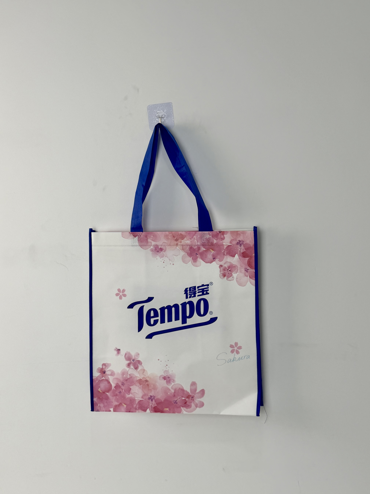

An elegant spring-themed promotional bag for Tempo tissue products, featuring watercolor cherry-blossom illustration and the iconic blue brand mark on a clean white field with sapphire-blue trim accents.

Tempo is one of Europe's most recognized tissue and hygiene brands, owned by Essity and operating with particular strength in Germany and China. In the Chinese market, Tempo has cultivated a premium positioning through consistent brand equity built around the iconic blue logo, superior product quality, and seasonal limited-edition releases. The brand's cherry-blossom series is an annual spring highlight, creating anticipation among loyal consumers who collect each year's design.
Our cherry-blossom collection isn't just a product line — it's an annual tradition. The bag needs to feel like something customers will save and reuse throughout the year.
The promotional bag was developed for Tempo's Q2 spring campaign, distributed with multi-pack tissue purchases at major supermarkets and e-commerce platforms. Unlike standard promotional items, this bag was designed to become a keepsake — a reusable shopping tote that extends brand presence far beyond the initial tissue purchase.
The design strategy pairs Tempo's corporate blue identity with the ephemeral beauty of cherry blossoms. Watercolor-style pink sakura petals cascade across the white field, creating a sense of gentle movement and seasonal transience. The classic Tempo wordmark anchors the composition in brand familiarity, while the "Sakura" script adds an artisanal, limited-edition quality.
Soft pink cherry-blossom watercolor creates seasonal romance and collectible appeal.
Classic Tempo wordmark in corporate blue ensures instant brand recognition.
Blue side gusset strips frame the composition and reinforce brand color presence.
Hand-lettered seasonal descriptor adds limited-edition exclusivity and artisanal charm.
The Sakura promotional bag required photographic-quality printing to reproduce watercolor illustration detail on non-woven fabric. The specification balanced premium visual execution with FMCG promotional cost targets.
| Parameter | Specification | Test Standard |
|---|---|---|
| Load Capacity | 5 kg | ASTM D5265 |
| Print Resolution | 175 LPI | Internal Protocol |
| Color Fastness | Grade 4-5 | ISO 105-B02 |
| Seam Strength | > 22 N/cm | ASTM D1683 |
Watercolor reproduction on non-woven fabric demanded gravure printing precision and careful color management. The five-stage workflow ensured that soft pink gradients and delicate petal edges remained crisp across the production run.
90gsm optical-white non-woven PP. Corona treatment for print adhesion. Color profile calibrated for watercolor gamut reproduction.
CMYK process print for watercolor sakura illustration. 175 LPI with expanded dot-gain compensation for soft-edge fidelity.
18-micron gloss BOPP enhancing watercolor color depth and creating petal-transparency visual effects. Calendered for flat finish.
Blue non-woven side gussets sewn to printed main panels. Precision alignment ensuring frame symmetry.
Blue handles attached with cross-stitch. Color accuracy verified against Essity brand guidelines. AQL 1.0 final inspection.
The Sakura bag was distributed as a gift-with-purchase during Tempo's spring promotional window across Carrefour, Walmart, and Tmall channels. The campaign targeted female consumers aged 25-40 who represent Tempo's core demographic and are most responsive to seasonal and collectible packaging.
Key Insight: Customer surveys revealed that 34% of recipients specifically purchased the qualifying tissue multi-pack to obtain the bag — demonstrating that the packaging had become a primary purchase motivator rather than a passive bonus. This "bag-first" purchasing behavior justified the premium production investment.
The watercolor illustration proved particularly effective on social media, where customers photographed the bag in natural settings — parks, cherry-blossom viewing locations, cafe tables — creating organic brand content that Tempo reposted across its official channels. The bag effectively became a user-generated-content generator.
Three design decisions differentiate this seasonal promotional bag from standard FMCG giveaways. Each leverages cultural tradition and brand equity to create genuine customer desire.
Cherry blossom viewing is a major cultural event across East Asia. By aligning the bag with sakura season, Tempo connects its tissue brand to a moment of collective cultural celebration. The bag doesn't just carry tissues — it carries spring.
Watercolor illustration reads as hand-crafted and unique rather than mass-produced. In a promotional market dominated by flat logos and simple patterns, the painterly quality elevates the bag from disposable giveaway to desirable accessory.
The sapphire-blue gusset strips and handles ensure that even when the bag is viewed from the side, Tempo's brand color remains visible. This 360-degree brand presence transforms the bag into a walking billboard from every angle.
We design and manufacture seasonal promotional packaging that customers actively seek out. From watercolor illustration to collectible limited editions, we turn giveaways into purchase drivers.